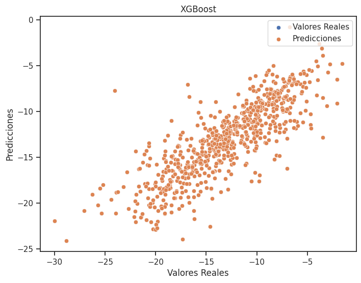

Machine Learning
Se llevó a cabo un modelado de machine learning utilizando diversos descriptores para estimar la constante de asociación delta G. Esta aproximación se adoptó como respuesta a los desafíos relacionados con los elevados costos temporales y de muestras necesarios para determinar dicha constante directamente. La implementación de modelos de machine learning ofrece una alternativa eficiente y menos costosa, permitiendo la predicción de la constante de asociación delta G mediante la utilización de características descriptivas, lo que facilita un enfoque más práctico y accesible en términos de recursos.

